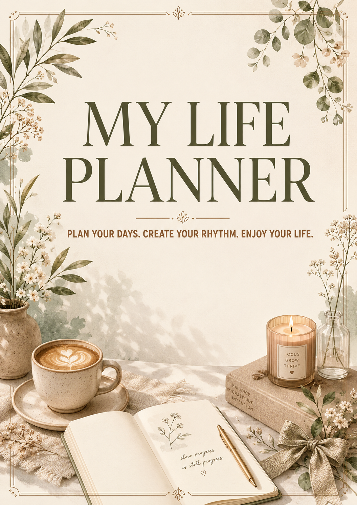

My Life Planner: Build a Daily Routine That Actually Sticks

Most routines don't fail because of laziness. They fail because they're built around a to-do list alone, with no room for the parts of life that keep you steady — sleep, meals, rest, the small rituals that make a day feel like yours. A daily routine planner that only tracks tasks will always feel like pressure. One that makes space for both structure and self-care feels like support.
That's the idea behind My Life Planner: a daily routine planner and self-care planner built to hold your goals and your wellbeing in the same place, instead of treating them as separate things. Whether you call it a daily planner, a routine tracker, or a self-care journal, it's designed for anyone who has felt the gap between "I have a plan" and "I actually feel okay today" — and wants a system that closes that gap instead of widening it.
Why Most Daily Routines Fall Apart
A routine usually breaks in the first two weeks for one of three reasons: it was copied from someone else's life instead of built for yours, it only accounts for "productive" hours and ignores rest, or there was never a simple way to track it day to day. A daily routine planner fixes the third problem directly, and gives you the structure to fix the first two yourself.
Reason 1: You Copied Someone Else's Routine
A 5 a.m. wake-up and a two-hour morning routine might work beautifully for one person and completely fall apart for someone with a different schedule, energy level, or set of responsibilities. A daily routine planner works best when the pages are filled in with your own hours, your own energy patterns, and your own priorities — not a template borrowed from a productivity influencer.
Reason 2: Rest Was Never on the Page
Most planners are built entirely around output — tasks, deadlines, meetings. When rest, meals, and downtime never appear anywhere in the system, they quietly get skipped first whenever the day runs long. A true self-care planner treats rest as a line item, not an afterthought, which is exactly why it survives longer than a plain to-do list.
Reason 3: There Was No Simple Way to Track It
Good intentions fade fast without a visual record. A habit tracker or daily rhythm page gives you a small, satisfying way to see your consistency build day by day — and that visible progress is often the single biggest reason a routine sticks past the first week.
What's Inside My Life Planner
- Daily rhythm pages — morning, afternoon, and evening sections so your day has shape without feeling rigid.
- Weekly reset spreads — a calm place to look back at the week and reset intentions, not just tasks.
- Self-care and balance pages — space for mood, energy, and the small things that actually make you feel good.
- Goals and priorities — so the big picture and the daily grind stay connected instead of feeling like two different lives.
Daily Rhythm Pages: Morning, Afternoon, Evening
Instead of one long blank space, each day is broken into three simple sections. The morning routine section holds the handful of things that set the tone for your day — a glass of water, a short walk, reviewing your top priority. The evening routine section closes the loop, with room for a wind-down ritual instead of scrolling until you fall asleep.
A Built-In Habit Tracker and Mood Tracker
Consistency is easier to see than to feel. A simple habit tracker grid lets you mark off water intake, movement, sleep, or any habit you're building, while a mood tracker gives you one honest word or emoji per day. Over a few weeks, these small marks turn into a pattern you can actually learn from — which days feel heavy, and what tends to help.
Weekly Reset and Gratitude Prompts
Every week closes with a reset spread instead of just rolling into the next one unplanned. A short gratitude prompt, a look back at what worked, and a few lines to reset intentions for the week ahead keep the planner feeling like reflection rather than another obligation.
Daily Planner vs. Habit-Tracking Apps: Which Actually Works?
Plenty of people try a habit-tracking app before they try a physical or PDF-based daily routine planner. Apps are convenient, but they compete with every other notification on your phone, and it's easy to close the app and forget it exists by lunchtime.
Why a Planner Often Outlasts an App
Opening a planner is a small, deliberate ritual — there's no news feed, no message notification, nothing pulling your attention somewhere else. That single difference is why so many people who've abandoned three or four productivity apps find that a printable daily routine planner is the first system that actually sticks past a month.
When an App Still Makes Sense
If you need reminders that buzz your phone at a set time, an app can complement a planner well. Many people use both: an app for time-based alerts, and My Life Planner for the reflective side — mood, gratitude, and the weekly reset that apps rarely do well.
Who a Daily Routine Planner Actually Helps
A daily routine planner isn't only for people with packed schedules. It helps just as much when your days feel scattered — working from home, managing a household, or simply trying to find a rhythm after a season where nothing felt structured. The point isn't to fill every hour; it's to give your day a shape you can return to, even on the days that don't go as planned.
For Remote and Work-From-Home Days
Without the natural structure of commuting or fixed office hours, work-from-home days can blur into one long stretch with no clear start or end. A daily rhythm page creates that boundary on paper, marking when the workday begins, when it ends, and when self-care time actually starts.
For Parents and Household Managers
When you're the one holding everyone else's schedule together, your own routine is usually the first thing to disappear. A self-care planner with its own dedicated space — separate from the family calendar — makes it much harder to quietly skip yourself every day.
For Anyone Rebuilding After a Disrupted Season
After a stretch of travel, illness, a new job, or simply a chaotic few months, routines don't rebuild themselves. Starting with just the daily rhythm page, one week at a time, is often the gentlest way back into a structure that feels sustainable rather than forced.
Structure and Self-Care, Together
The biggest shift with a life planner isn't adding more pages — it's putting rest and reflection on the same page as your tasks, so neither one quietly disappears. When your evening routine and your to-do list live in the same daily routine planner, self-care stops being the thing you do "if there's time" and becomes part of the plan itself.
If your days are mostly shaped by classes and assignments rather than a full daily rhythm, our Student Full Year Planner guide covers a more academic-focused layout that might fit better.
A Simple Way to Start Your Daily Routine Planner
Don't try to fill every page on day one. Start with just this two-week plan:
Week One: Just the Basics
- Fill in tomorrow's morning, afternoon, and evening rhythm tonight — three lines, nothing more.
- Each evening, jot one line under self-care: what helped you feel steady today.
Week Two: Add the Habit Tracker
- Pick one or two habits — water, movement, or sleep — and start marking them on the habit tracker grid.
- On Sunday, use the weekly reset spread to look back and set one small intention for the week ahead.
Two weeks of that is usually enough for a daily routine to start feeling like habit instead of homework.
Frequently Asked Questions
What is a life planner used for?
A life planner is used to organize your daily routine, goals, and self-care in one place, rather than tracking tasks in one app and everything else in your head. It's meant to reflect your whole day, not just your to-do list.
How is My Life Planner different from a regular to-do list?
A to-do list only tracks tasks. My Life Planner adds daily rhythm pages, a habit tracker, weekly resets, and self-care check-ins, so rest and reflection stay part of the plan instead of getting pushed aside.
Can a daily routine planner help with self-care?
Yes. When self-care has its own dedicated space next to your goals and tasks, it's far less likely to be skipped than when it's left as an afterthought you only get to "if there's time."
How long does it take for a new routine to feel natural?
Most people notice a routine starting to feel like habit rather than effort after about two consistent weeks — which is why starting small with just a few daily lines matters more than filling every page right away.
Is My Life Planner only for students?
No. It's built for anyone who wants more structure day to day — whether that's managing a household, working from home, or simply wanting a calmer daily rhythm.
Should I use a planner or a habit-tracking app?
Both can work, but many people find a physical or PDF-based planner sticks longer than an app, since opening it is a deliberate ritual rather than one more notification competing for attention. Some people use an app for reminders and a planner for reflection.
What's the difference between a daily planner and a self-care planner?
A daily planner usually focuses on tasks and schedules, while a self-care planner adds mood tracking, gratitude prompts, and wellness check-ins. My Life Planner combines both, so structure and self-care live on the same page instead of in two separate systems.
Explore My Life Planner →